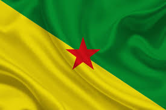

A Guiana Francesa é uma região da França na América do Sul que tem uma história rica: Em 1946, a Guiana Francesa deixou de ser uma colónia e tornou-se um departamento ultramarino da França. Foi a última colónia francesa nas Américas e o único território europeu em terras sul-americanas, para além das ilhas Malvinas. Durante a Segunda Guerra Mundial, a Guiana Francesa tornou-se parte da França de Vichy, mas uniu-se oficialmente à França Livre em 1943. Entre 1809 e 1817, a Guiana Francesa foi ocupada por tropas luso-brasileiras, o que provocou um litígio territorial com o Brasil que só foi resolvido em 1900. Em 2015, a Guiana Francesa deixou de ser um departamento ultramarino e tornou-se uma coletividade territorial única, com maior autonomia administrativa. Atualmente, tem um legislativo unicameral, a Assembleia da Guiana.
O esporte mais praticado na Guiana Francesa é o futebol, tendo inclusive o Campeonato Nacional da Guiana Francesa, a principal competição de futebol do país, organizado pela Ligue de Football de La Guyane Française e sua primeira edição ocorreu no ano de 1962.
A culinária da Guiana Francesa é rica e mistura influências de várias culturas, incluindo a Crioulo, Bushinengue e Indígena.
O francês é a língua oficial, e é o idioma predominante do departamento, mas outras línguas também são faladas. A principal língua falada pela sociedade franco-guianense é o Crioulo da Guiana Francesa, que é baseado no francês, inglês, português, espanhol e outros dialetos africanos e ameríndios.
O clima da região é o equatorial de montanha, com possibilidade de percepção das variações estações do ano, no verão as temperaturas atingem 30°C e no inverno 25°C e a média anual de precipitação é de 1.200 mm.
A religião principal na Guiana Francesa é o catolicismo romano. No entanto, os quilombolas e os povos ameríndios ainda mantêm as suas próprias religiões tradicionais.